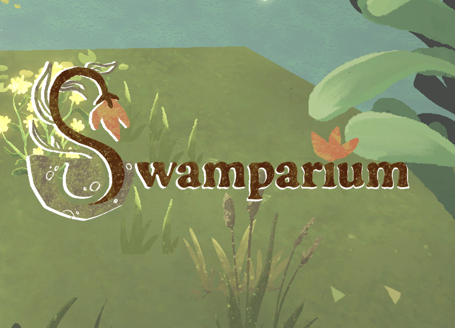
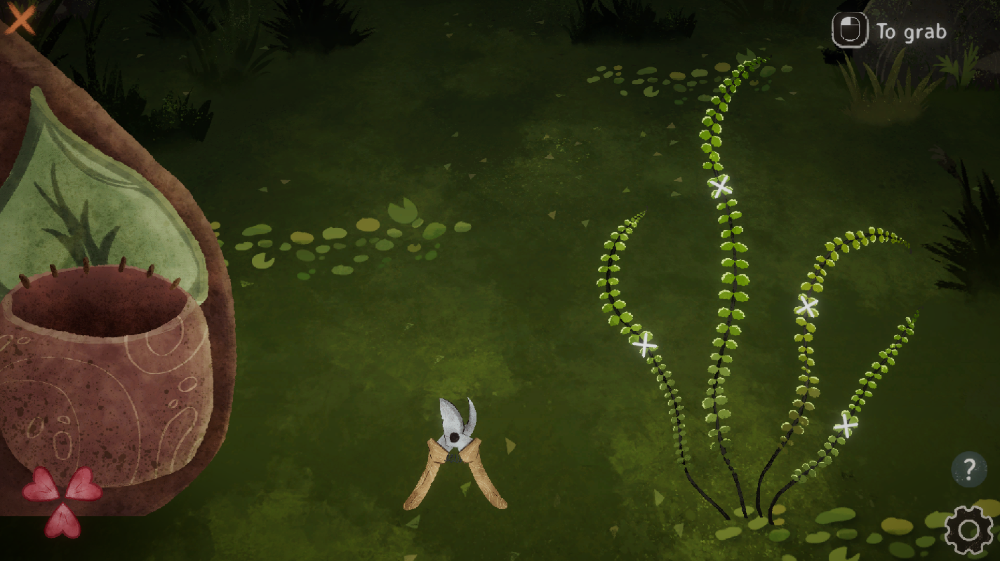
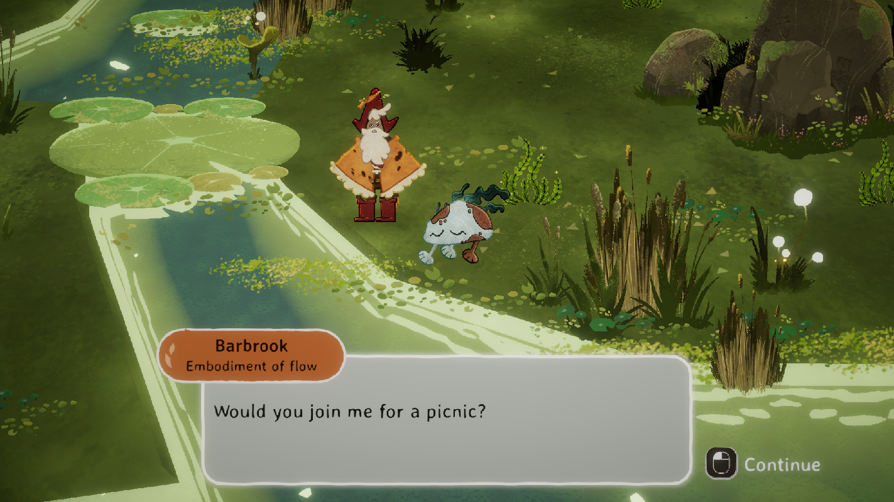
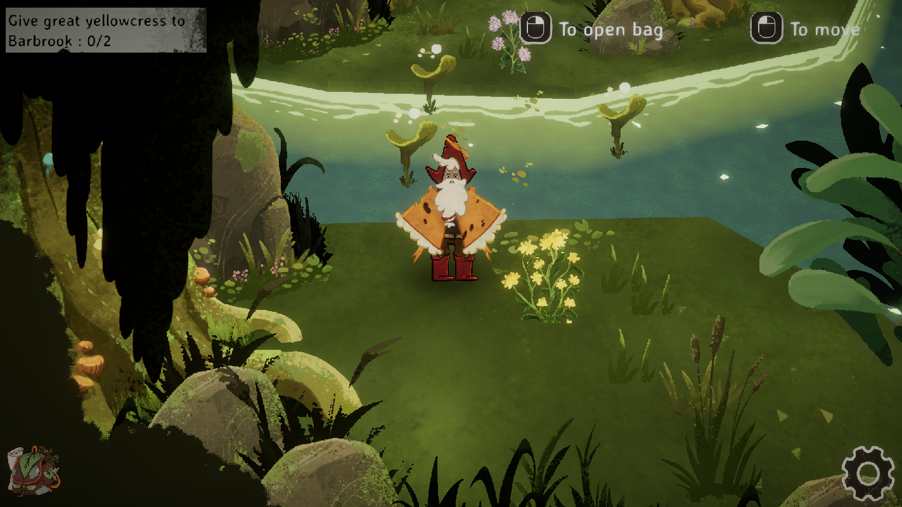
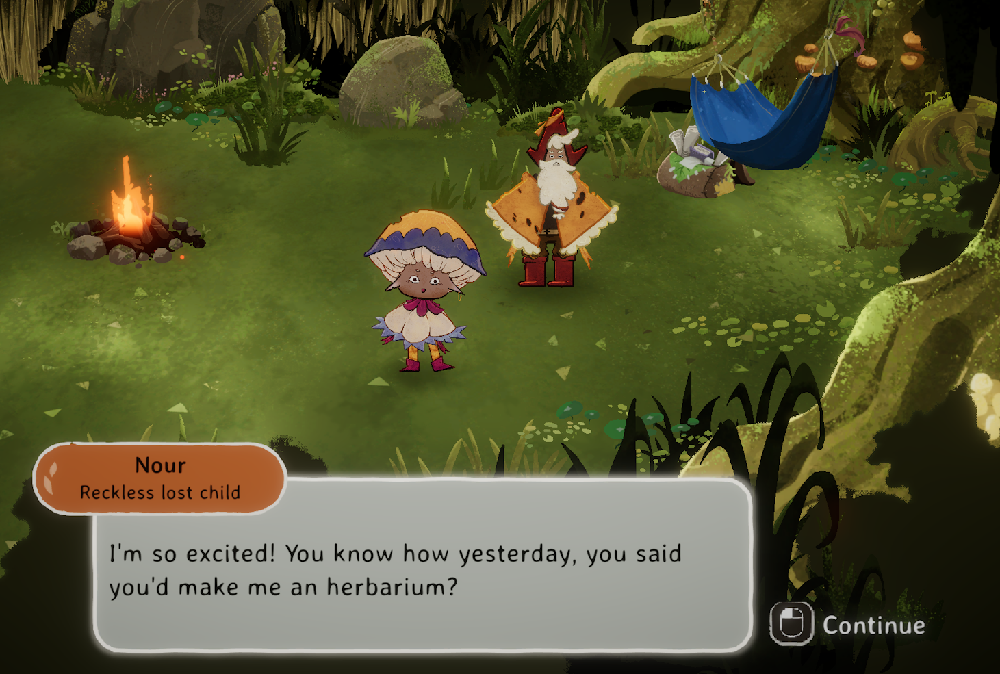

Swamparium est une Vertical Slice d'un jeu cozy, créé durant les projets M2 au CNAM-ENJMIN. Il a été créé en Unity / C#.
On y joue un amateur de nature, qui doit explorer un marais et remplir un herbier pour son apprenti.

C#
Unity
Jeu cozy
6 mois
- Le but final du joueur est de remplir son herbier avec toutes les plantes du marais. Pour ce
faire, il doit explorer ce dernier et récolter les plantes qu'il n'a pas. Pour récolter une plante,
il faut réussir un mini jeu ou la couper, mais sans l'endommager. Une attention particulière sur la
sensation de physicalité et de juice a été portée sur ces intéractions. Une fois cela fait, il n'y a
plus
qu'à secher la plante dans son herbier pour l'y ajouter. Dormir permet de faire repousser les
plantes que l'on a détruit par erreur.
- En plus de récolter des plantes, le joueur peut intéragir avec les différents esprits du marais.
Ces derniers nous donnent des quêtes, et une récompense si on réussit. Dans la VSlice, la quête d'un
des NPCs nous récompense avec une séquence de dialogue nous décrivant le passé de notre personnage.
On peut aussi intéragir avec notre apprenti, qui nous donnera des informations divers, comme la
position de passages secret dans le marais.
- Le système de localisation est hérité de la série Harold's
Quest. Il a cependant été modifié pour être plus flexible et simple d'usage.
Les dialogues sont crée avec un système nodal proche de celui de Spailpin. L'implémentation nodale s'est faite
avec XNode.
- Une attention importante a été portée sur l'accessibilité, avec par exemple des contours autour
des objets interactibles, ou des tailles de textes ajustables.



